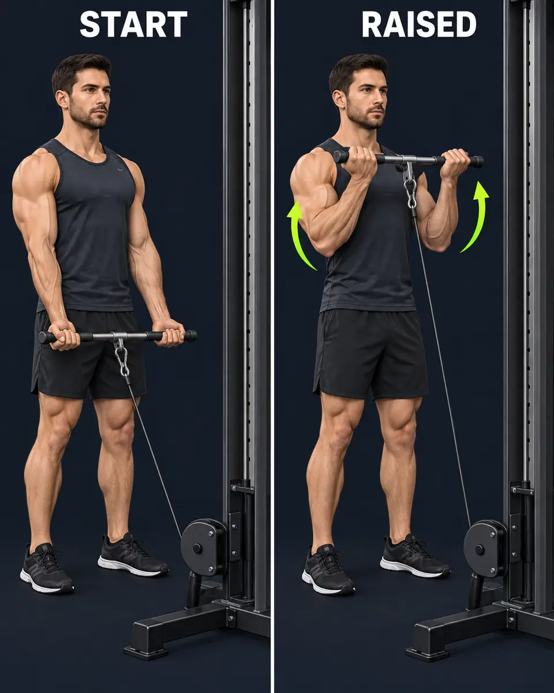

Spec 19 review: chest, back and shoulders. Highlights below are live SVG regions over two shared neutral images.
Exercise menu · 120 px artwork
Chest
Muscle group
Back
Muscle group
Shoulders · front
Muscle group
Shoulders · rear
Muscle group
Exercise rows · 80 × 104 px
Barbell Bench Press
Mid chest · upper/lower chest and front delts
Primary SecondaryIncline Dumbbell Press
Upper chest · mid chest and front delts
Primary SecondaryLat Pulldown
Lats · mid back
Primary SecondaryPilot rows isolate the regions being reviewed. Arm and lower-body regions follow after approval; these are not the complete production exercise maps.
Full-map proportions
Lime: primary/high. Olive: secondary/low. Neutral regions keep their anatomical shading.
Approved movement-guide reference

The existing movement artwork remains unchanged.